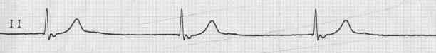
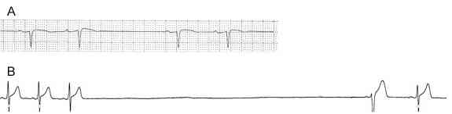
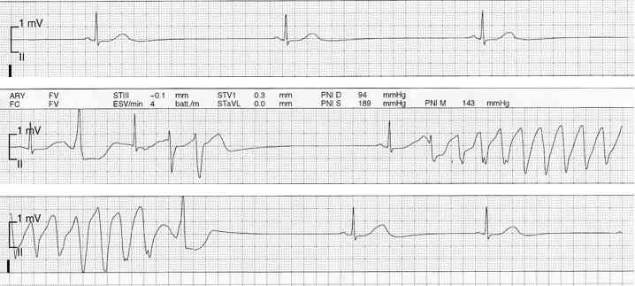

Bienvenue Sur Medical Education
Bloc sino-auriculaire
Spécialité : cardiologie /
Points importants
-
Anomalie de l'automatisme du noeud sinusal ou altération de la conduction entre le noeud sinusal et l'oreillette droite, intermittente ou permanente, complète ou incomplète
-
Faible risque de mort subite contrairement aux blocs auriculo-ventriculaires
-
La gravité dépend du retentissement hémodynamique de la bradycardie, plus rarement du risque de torsades de pointe accompagnant la bradycardie
-
Les principales causes sont l'âge, les médicaments ralentisseurs (anti-arythmiques), les pathologies fibrosant les oreillettes (HTA, HVG, valvulopathies, cardiomyopathies dilatées...)
-
Association possible à des troubles du rythme auriculaires (ACFA) : l'alternance de ceux-ci avec du rythme sinusal et avec ces troubles de conduction représente la maladie rythmique auriculaire, qui le plus souvent nécessite une stimulation cardiaque définitive
-
Le traitement à court terme (accélération de la FC) et à moyen terme (stimulation cardiaque définitive) est en grande partie déterminée par la présence ou non de symptômes
Présentation clinique / CIMU
SIGNES FONCTIONNELS
Présentation clinique / CIMU
SIGNES FONCTIONNELS
Généraux
- Asthénie
Spécifiques
- Syncope
- Dyspnée d'effort
CONTEXTE
Terrain
- Sujet âgé
- Traitement anti-arythmique (bêtabloquants, inhibiteurs calciques, amiodarone, anti-arythmiques de classe I)
Antécédents
- Parfois aucun
-
Maladies fibrosant l'oreillette gauche :
- valvulopathies
- cardiomyopathies dilatées
- HTA
- HVG
- cardiopathies hypertrophiques
- Troubles du rythme auriculaires souvent associés
- Insuffisance rénale favorisant l'hyperkaliémie
Circonstances de survenue
- Introduction d'un nouvel anti-arythmique
- Prescription d'un collyre bêtabloquant
- Insuffisance rénale amenant à un surdosage médicamenteux
- Hyperkaliémie responsable d'une paralysie sinusale
EXAMEN CLINIQUE
Examen cardio-vasculaire
- Bradycardie régulière ou irrégulière
- Possible baisse de la PA isolée ou associée à un état de choc
- Signes d'insuffisance ventriculaire gauche (crépitants bilatéraux, marbrures)
Examen neurologique
- Agitation, obnubilation liées au bas débit cardiaque
EXAMENS PARACLINIQUES SIMPLES
ECG 12 dérivations avec tracé long - 2 aspects
-
Pause sinusale ou BSA 2 :
- entre 2 QRS éloignés (par rapport au reste du rythme sinusal normal), on n'observe qu'une ligne droite sans onde P, jusqu'à une onde P (BSA 2) ou un QRS d'échappement (pause sinusale)
- cette pause est par habitude considérée comme significative au-delà de 3 secondes de pause ventriculaire en période diurne, et 4 secondes en période nocturne
- le caractère symptomatique ou non des pauses est le seul élément vraiment décisionnel pour la suite de la prise en charge
 _232 Bloc sino-auriculaire complet
-
BSA complet ou paralysie auriculaire complète :
- absence totale d'ondes P sur l'ECG
- le rythme cardiaque est sous la dépendance d'un échappement ventriculaire haut situé (QRS fin en l'absence de bloc de branche préexistant)
- cet échappement est régulier et lent
- on peut parfois visualiser une oreillette "rétrograde" (QRS fin, négative en D2 D3 avF)
 _233 Bloc sino-auriculaire 2e degré
- Se méfier de l'allongement du QT résultant logiquement de la bradycardie et de l'émergence d'ESV tombant dans l'onde T; dans ce cas (pas fréquent) risque de torsades de pointe
 _234 Bradycardie sinusale
Baisse de la SpO2 (OAP)
Signes paracliniques
BIOLOGIQUE
Retentissement de la bradycardie
- Fonction rénale + bilan hépatique : insuffisance rénale et cytolyse sont en faveur d'un bas débit cardiaque a minima
Facteurs favorisants/aggravants
- Kaliémie
- Insuffisance rénale surtout si prise de médicaments ralentisseurs (surdosage)
IMAGERIE
Radiographie thoracique
- Cardiomégalie
- Surcharge vasculaire en faveur d'un OAP débutant
Diagnostic étiologique
-
Iatrogène : surdosage médicamenteux ou effet secondaire simple d'un anti-arythmique
-
Idiopathique lié à l'âge : en général aggravation progressive d'un trouble de conduction connu ou passé inaperçu
-
Hyperkaliémie à l'origine de paralysies sinusales
-
Fibrose de l'oreillette secondaire à une cardiopathie (ischémique dilatée, valvulopathie mitrale ++, HTA...) et souvent dans le cadre d'une maladie de l'oreillette
Diagnostic différentiel
Diagnostic différentiel
- Entre 2 QRS éloignés par rapport au rythme sinusal normal, il y aura une ou des ondes P, qui sont non conduites : différent de la pathologie du noeud sinusal où il manque des ondes P entre ces 2 QRS
- En cas de rythme ventriculaire lent régulier (échappement) il y a des ondes P plus fréquentes que les QRS et non conduites (BAV 3) : différent du BSA 3 où il n'y a pas d'ondes P entre les QRS
Traitement
STABILISATION INITIALE
En cas de BSA 2 et/ou pause sinusale > 3 secondes
-
Si asymptomatique :
- ne rien faire à part surveillance par scope et adresser en cardiologie
-
Si symptomatique (syncope, insuffisance cardiaque, bas débit) :
- stimulation médicamenteuse par atropine et/ou isoprénaline pour "réveiller" l'activité sinusale
-
Si asymptomatique et risque de torsade de pointes (QT allongé, ESV menaçantes) :
- il est préférable d'accélérer de la même façon
N.B. : La sonde d'EES ne doit être réservée qu'aux bradycardies extrêmes réfractaires aux médicaments accélérateurs
En cas de BSA 3
- Le traitement suit le même principe
- Il est préférable de garder le patient sous surveillance scopique même si asymptomatique
SUIVI DU TRAITEMENT
- Correction de la cause +++
- Arrêt progressif des drogues accélératrices si il existe un facteur curable (arrêt d'un anti-arythmique), à débuter au bout de 24 h, à diminution progressive et en évaluant effet de la diminution
- Discussion d'une stimulation cardiaque définitive en l'absence de cause réversible ou en cas de maladie de l'oreillette
MEDICAMENTS
Atropine
- 0,5 à 1 mg en IV lente (ou SC) ; 0,03 mg/kg sans dépasser 2 mg sur les 24 h
Isoprénaline
- Dilution dans G5% tel que 1 mg (5 ampoules) dans 250 cc. A passer à fort débit tel que FC > 80/min)
- Puis entretien débit entre 0,2 et 10 mg/24 h, en pochon ou en seringue électrique
- Tubulure à l'abri de la lumière
Surveillance
CLINIQUE
-
Scope +++ ou à défaut ECG répétés
-
PA, FC, SpO2/h
-
Diurèse/4 h
-
Etat de conscience
-
Recherche de signes d'insuffisance cardiaque (OAP)
PARACLINIQUE
-
Kaliémie, créatininémie
Devenir / orientation
-
En cas de bradycardie intermittente ou permanente symptomatique, diriger vers service de cardiologie avec surveillance par monitorage permanent
Bibliographie
-
Aide mémoire de rythmologie. M Slama, G Motté, A Leenhardt, C Sebag. Editions Médecine Sciences - Flammarion
-
L'Electrocardiogramme. J Gay, M desnos, P Benoît. Editions Frison Roche
-
Précis de Rythmologie de la Société française de Cardiologie. N. saoudi, J-C Deharo. Editions Sauramps médical
-
Vardas PE et al. Guidelines for cardiac pacing and cardiac resynchronisation therapy. European Heart Journal 2007; 28, 2256-2295
Devenir / orientation
-
En cas de bradycardie intermittente ou permanente symptomatique, diriger vers service de cardiologie avec surveillance par monitorage permanent
Bibliographie
-
Aide mémoire de rythmologie. M Slama, G Motté, A Leenhardt, C Sebag. Editions Médecine Sciences - Flammarion
-
L'Electrocardiogramme. J Gay, M desnos, P Benoît. Editions Frison Roche
-
Précis de Rythmologie de la Société française de Cardiologie. N. saoudi, J-C Deharo. Editions Sauramps médical
-
Vardas PE et al. Guidelines for cardiac pacing and cardiac resynchronisation therapy. European Heart Journal 2007; 28, 2256-2295
Auteur(s) : Anne MESSALI